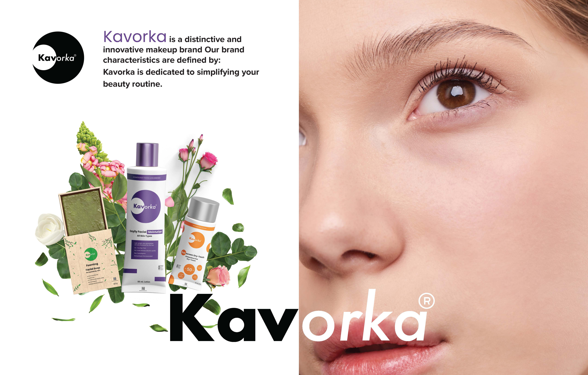
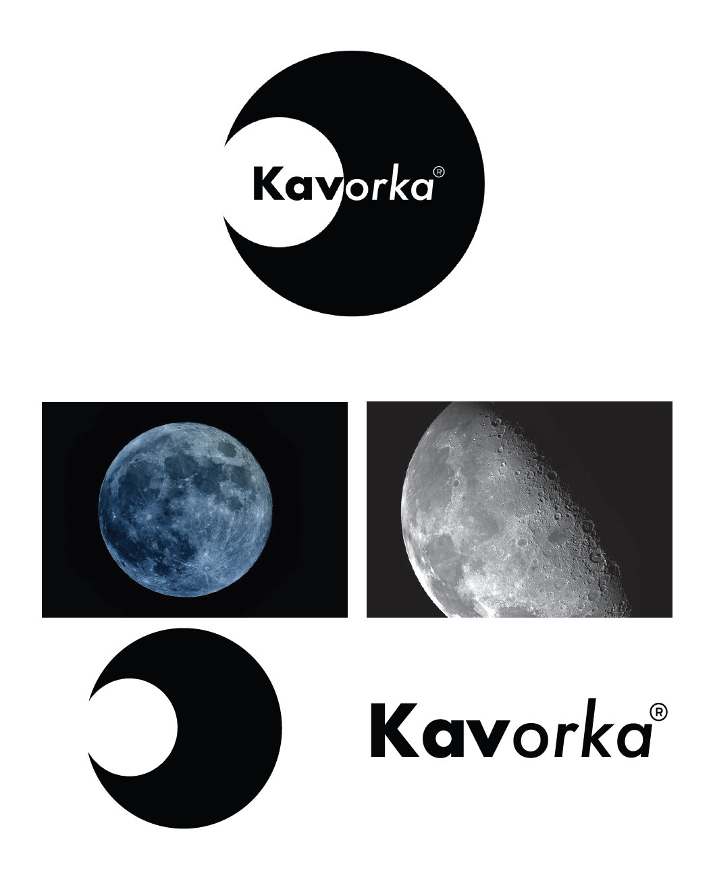
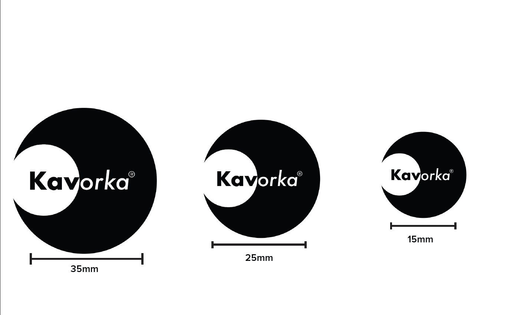
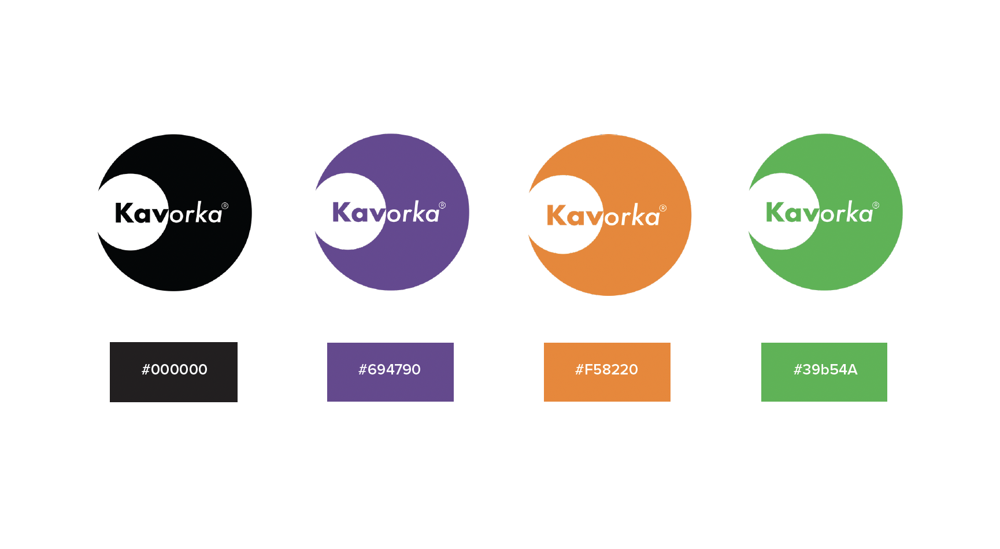
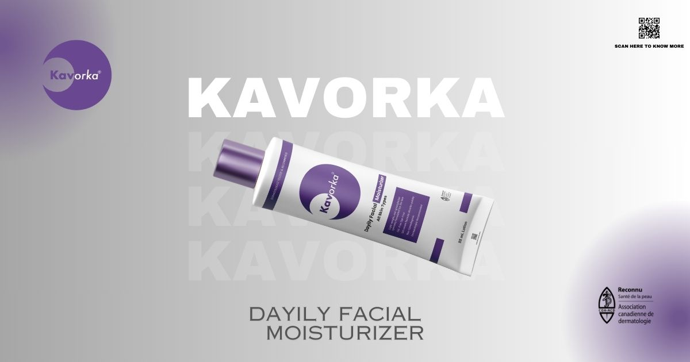
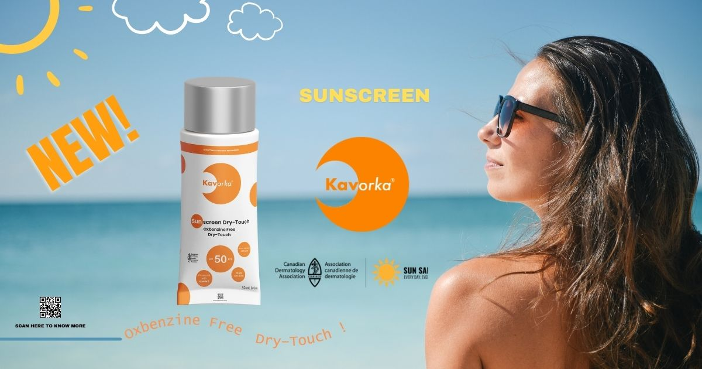
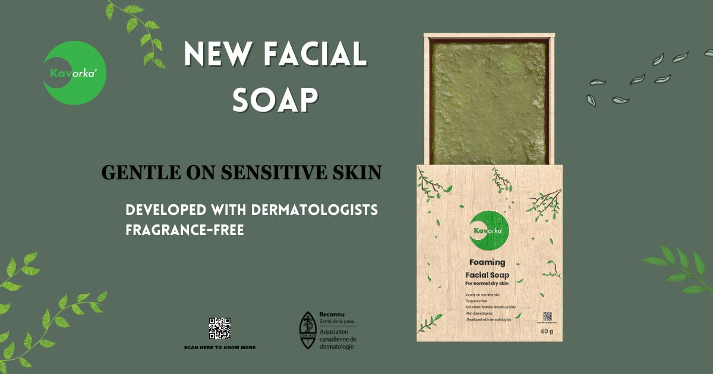

Introduction
Kavorka is a distinctive and innovative makeup brand Our brand characteristics are defined by: 01. Kavorka is dedicated to simplifying your beauty routine. 02. We offer more than just makeup; we provide sunscreen moisturizer and soap, creating a comprehensive beauty and skincare solution in one brand.
Problems
I dont know how to make this logo at the first time and it doesn't looks great orginally
Brand Idea
Without color
Logo Size
Without color
Logo Color
Without color
3 Package idea
Kavorka’s Moisturizer, in its elegant purple packaging, is a skincare essential. It hydrates your skin, leaving it soft, smooth, and glowing. The purple color symbolizes luxury and sophistication. Experience enhanced radiance with Kavorka’s Moisturizer.
Kavorka’s Sunscreen, in its vibrant orange packaging, offers superior sun protection. It shields your skin from harmful UV rays while nourishing it. The orange color symbolizes warmth and energy. Enjoy the sun responsibly with Kavorka’s Sunscreen.
Kavorka’s Soap, in green packaging, gently cleanses while maintaining skin’s moisture. It leaves your skin soft,refreshed, and revitalized. The green color symbolizes nature and purity. Experience natural health and beauty with Kavorka’s Soap.

Kavorka is a unique and forward-thinking makeup brand that goes beyond cosmetics. It is committed to streamlining beauty routines by offering a holistic solution that includes not only makeup but also essential skincare products like sunscreen, moisturizer, and soap. This comprehensive approach positions Kavorka as a one-stop brand for all beauty and skincare needs.